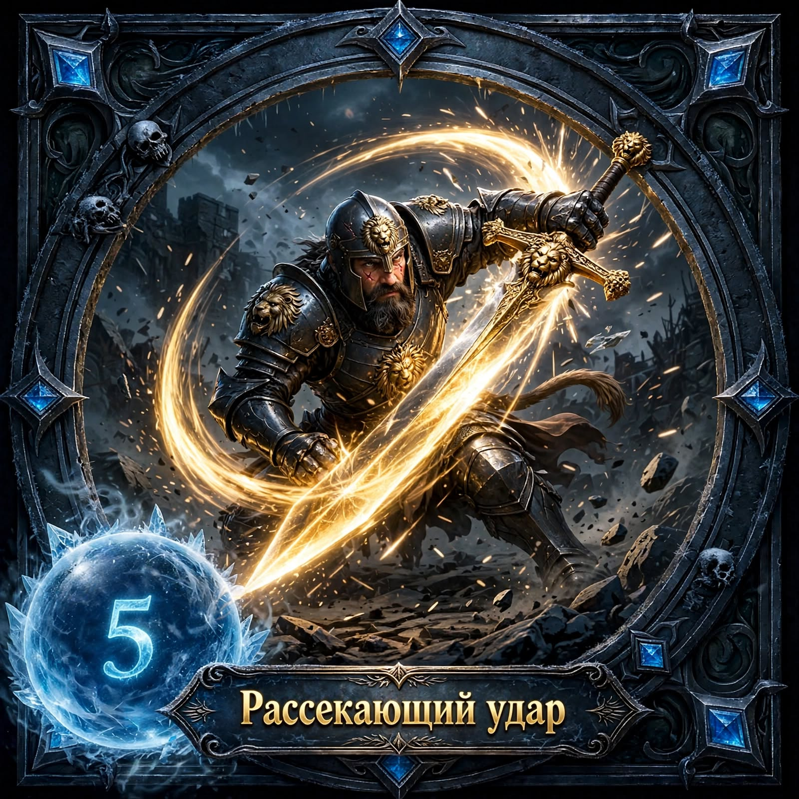

LION WARDEN warrior-m
Дух Льва PASSIVE
Каждые 3 атаки дают +15% брони на 2 раунда. При 3 стаках следующая атака станит на 1 раунд.
Удар Щитом 1
Бьет щитом, нанося 150% урона и оглушая на 1 раунд. Дает щит 15% HP на 2 раунда.
Рык Льва 2
Издает рык, все враги получают -20% урона на 3 раунда, союзники +20% урона на 3 раунда.

Стена Щитов 3
Становится в защиту на 3 раунда: -50% получаемого урона и отражает 50% урона обратно.
Прайд Льва 4
ULTIMATE: Призывает 2 львов на 4 раунда. Львы имеют 70% твоего урона и танкуют врагов. Сам получает +30% HP и +25% урона.